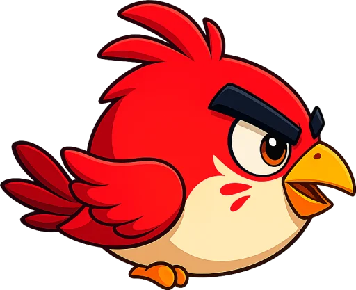
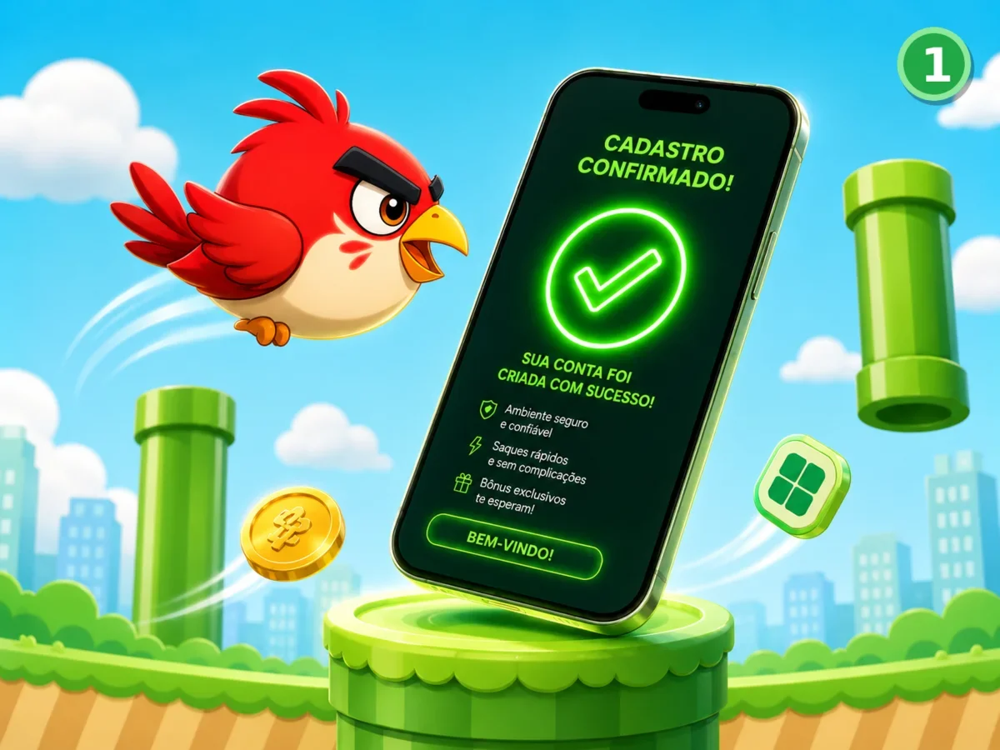
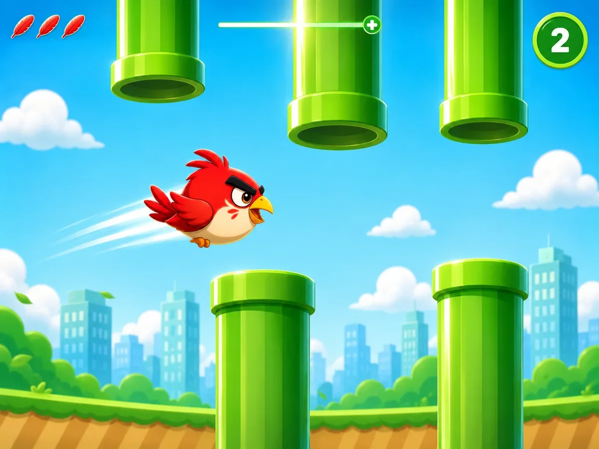
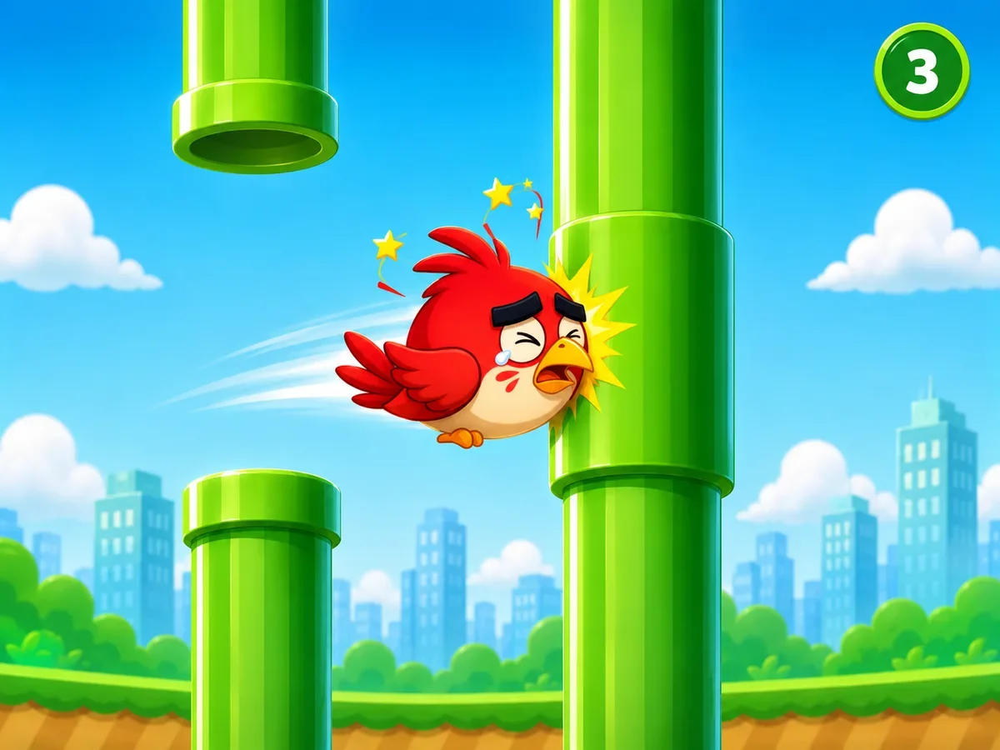
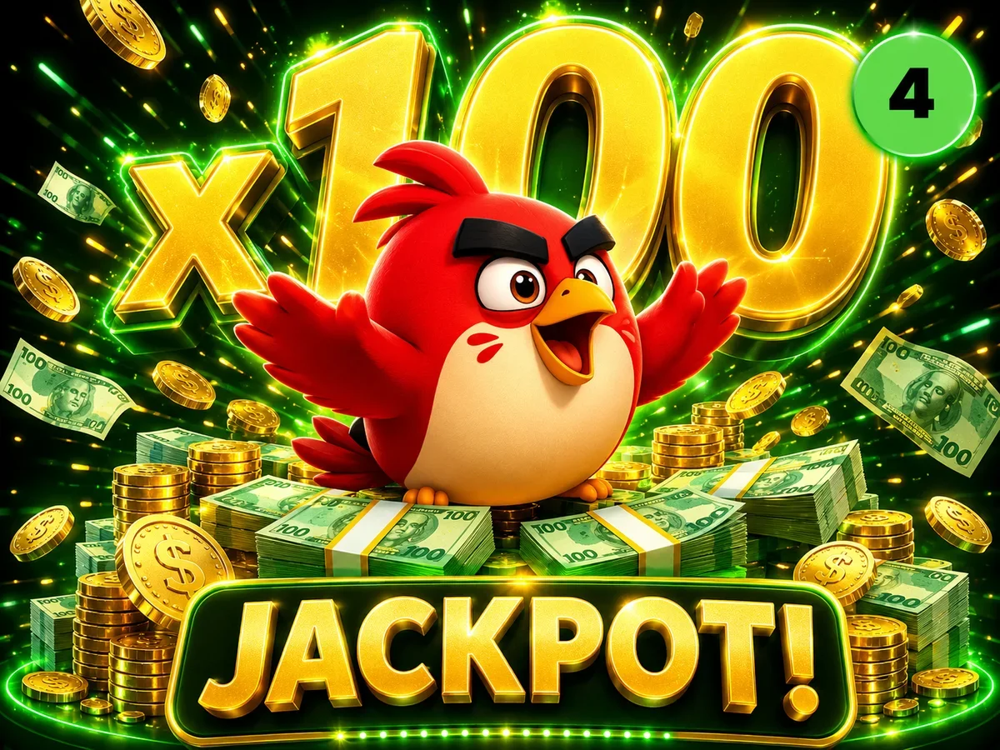

Segure o voo, desvie dos canos e transforme cada passagem em prêmios de verdade.

Aprenda a faturar com o Flappy Bird em 4 passos simples.

Coloque saldo na conta de forma rápida e segura pra começar a voar.

Toque na tela pra manter o pássaro voando e atravessar os canos.

Cada cano que você passa soma dinheiro no acumulado da rodada.

Bateu a meta? O cashout libera — saca via PIX ou continua acumulando.
O passarinho ficou muito bom mano, parece aqueles joguinhos antigos de celular só que mais bonito. Coloquei 50,00 pra testar e consegui fazer 782,00
Achei que ia ser difícil por causa do passarinho, mas tem que pegar o tempo certo do toque, dá pra ganhar bem fácil uma grana boa
Jogo simples e fácil de ganhar. No começo eu bati 2 vezes no cano, depois peguei a manha. O legal é que cada obstáculo que passa já aparece o valor que ganha, top demais
Teste sem depositar e veja como funciona. Quando quiser jogar valendo, o saque cai no PIX.
Testar grátis